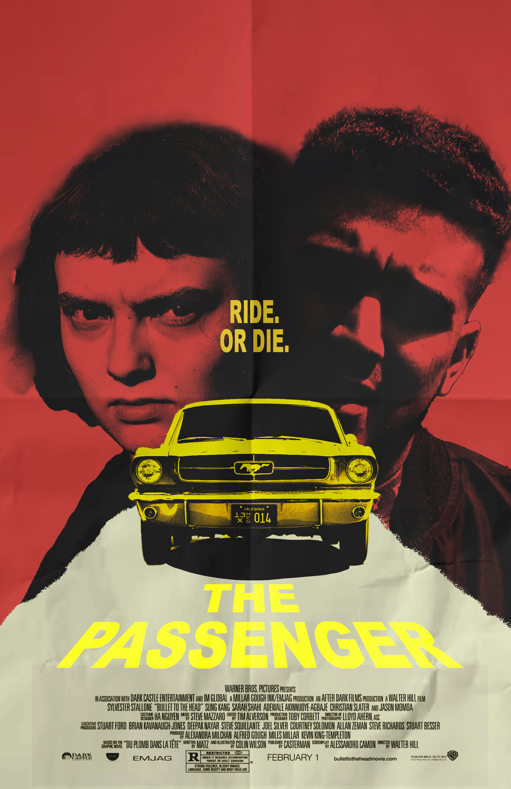
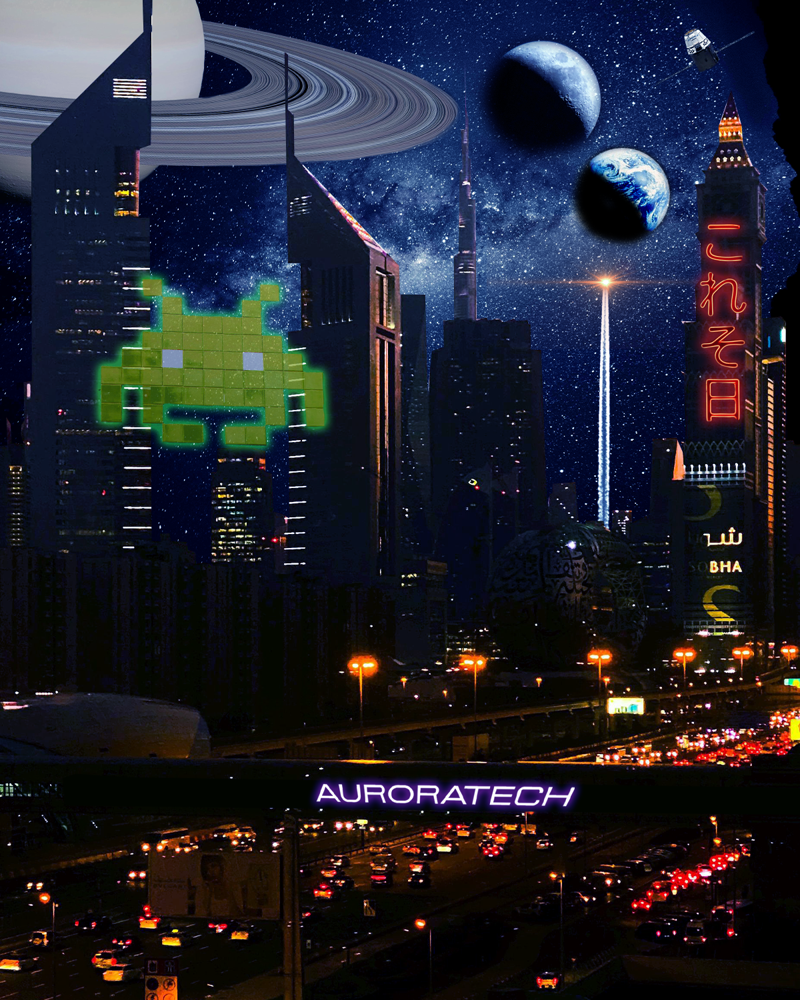

This is stuff I made in the DIG2000 class. I got to use Photoshop and Premiere Pro, and now a webite with HTML
This is the first thing I made for this class, and it is a recreation of a movie poster from the movie "The Passenger". I used Photoshop for this and how to non-destructively edit images.
This is an imaging project that I had to collect various images online to combine together into... something. I called this "Auroratech City" as it's supposed to be a sci-fi city with some retro and neon vibes thrown in there. I used Photoshop for this as well.
This is a video that Prof. Dafner had us put together to get used to Premiere. I used assets that were provided to edit together a short film of a man talking with himself in his mind.
This is some video I found from some phone in the woods a while ago, I don't know what this is supposed to be, but it was kind of spooky. (wink)